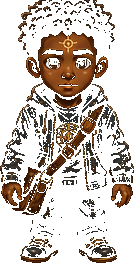

Stay on mission. Use Quiet Listen when you lose the path.
Orin must deliver a market parcel through a noisy city, resist distractions, catch scatterbugs, and follow the glowing path to the First Gate.

Lesson: What you give your attention to becomes part of you.
What you practiced: attention, recovery, staying on mission, and noticing distractions without obeying them.
You completed the missions and reached the Gate.